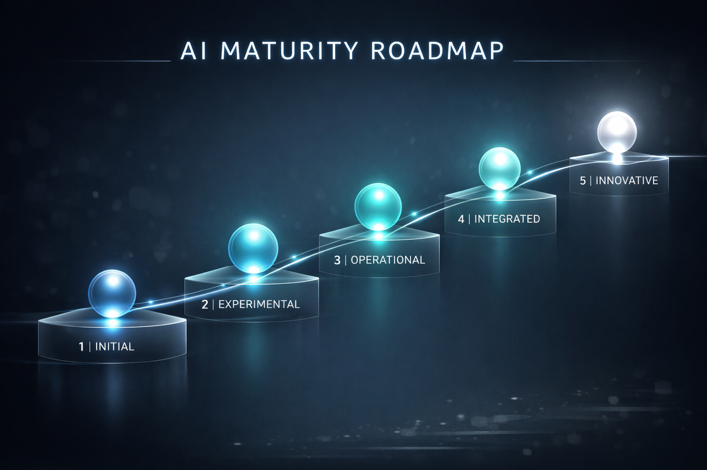

Entenda os 5 estágios de transformação com IA e como evitar armadilhas comuns
Toda organização passa por um ciclo de maturidade ao adotar IA. Compreender esse ciclo é crítico para evitar desperdício de recursos e acelerar o time-to-value.

Duração típica: 1-3 meses
Característica: Percepção de que IA é relevante para o negócio. Primeiros experimentos, muita curiosidade, pouca clareza.
Próximo passo: Definir 2-3 casos de uso prioritários com potencial de ROI claro.
Duração típica: 2-4 meses
Característica: Identificação sistemática de casos de uso. Prototipagem rápida. Primeiras métricas de impacto.
Próximo passo: Validar ROI de 1-2 casos de uso e preparar orçamento para produção.
Duração típica: 2-6 meses
Característica: Aprovação de orçamento. Construção de infraestrutura. Primeiros sistemas em produção.
Próximo passo: Operacionalizar sistemas e medir impacto real em produção.
Duração típica: 3-12 meses
Característica: Escala operacional. Múltiplos casos de uso em produção. Otimização contínua.
Próximo passo: Consolidar aprendizados e preparar para inovação contínua.
Duração típica: Indefinida (estado desejado)
Característica: IA é parte da cultura. Inovação contínua. Vantagem competitiva sustentável.
Estratégia: Manter orçamento dedicado a inovação (10-15% do orçamento de IA).